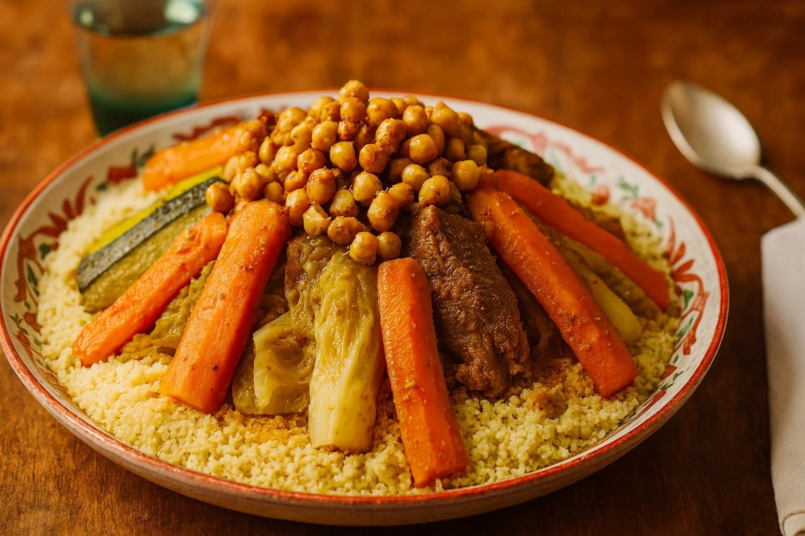
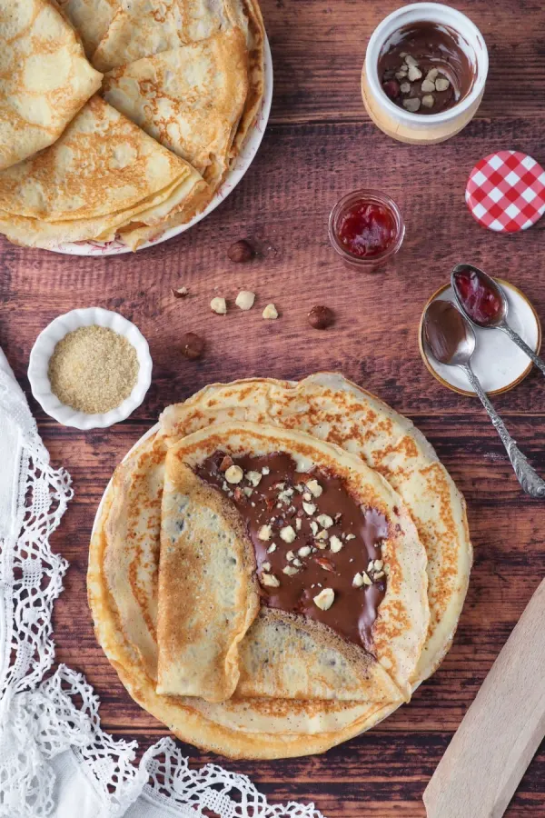
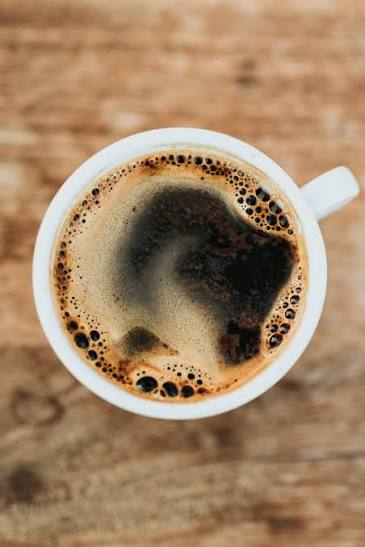

Couscous de sexta
O nosso prato especial, feito de raiz todas as sextas. Enquanto durar.
Bairro Azul · São Sebastião · Lisboa
Cozinha caseira, halal, no coração do Bairro Azul.
5,0 no Google · 31 avaliaçõesA nossa história
Na nossa língua materna, o tamazight dos berberes, «azul» é a primeira palavra que se diz a quem chega: olá, entra, senta-te. Em português, «azul» é a cor do céu de Lisboa e dos azulejos que forram a cidade. Foi essa ponte que quisemos dar de nome à casa.
Trouxemos connosco a cozinha com que crescemos, a da Argélia e das montanhas amazighes: o couscous que junta a família à sexta, os doces de mel e amêndoa, o pão amassado de manhã. Nada sai da nossa cozinha que não faríamos para os nossos.
Lisboa recebeu-nos como se recebe em casa. É uma cidade de encontro, de luz atlântica e de gente de toda a parte, e por isso fez sentido abrir aqui, no Bairro Azul, uma mesa onde duas culturas se sentam lado a lado.
O Azul não é só um restaurante. É um sítio onde se diz «olá» em duas línguas e onde ninguém almoça sozinho.

Só à sexta
Na Argélia, a sexta é o dia do couscous, o dia em que a família se junta à volta de um prato só. No Azul mantemos esse ritual, aqui em Lisboa.
Todas as sextas a sêmola é trabalhada à mão de manhã, os legumes cozem devagar e o caldo perfuma a casa inteira. Quando acaba, acabou, por isso o melhor é chegar cedo.
Galeria
Alguns dos nossos pratos, tal como saem da cozinha.



Avaliações
31 avaliações, todas de 5 estrelas. É a nossa maior recompensa.
« O couscous de sexta é de outro nível, sabores de casa e porções generosas. Já é um ritual nosso. »
« Doces orientais deliciosos e um atendimento de uma simpatia rara. O melhor brunch halal de Lisboa. »
« Sítio pequeno e cheio de alma, mesmo ao lado do metro. Os crepes são feitos na hora e voltamos sempre. »
Contacto e acesso
Avenida Ressano Garcia 43
1070-234 Lisboa, Bairro Azul
Junto ao El Corte Inglés · Metro São Sebastião
| Segunda | Fechado |
|---|---|
| Terça | das 9:00 às 22:00 |
| Quarta | das 9:00 às 22:00 |
| Quinta | das 9:00 às 22:00 |
| Sexta | das 9:00 às 22:00 · dia de couscous |
| Sábado | das 9:00 às 22:00 |
| Domingo | das 9:00 às 22:00 |